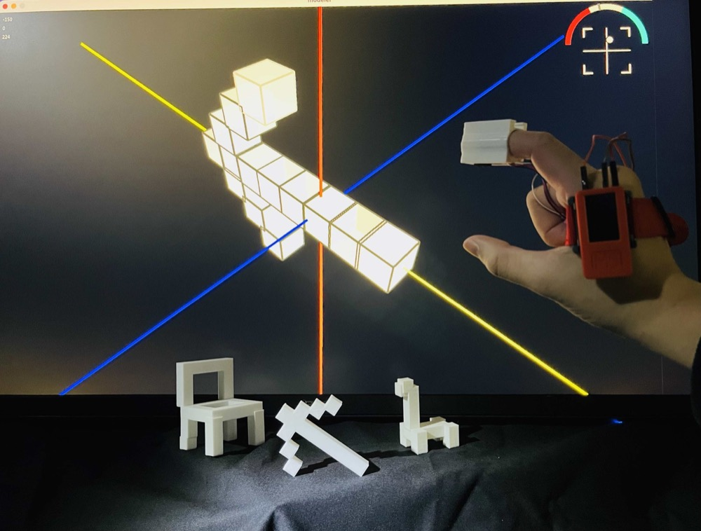
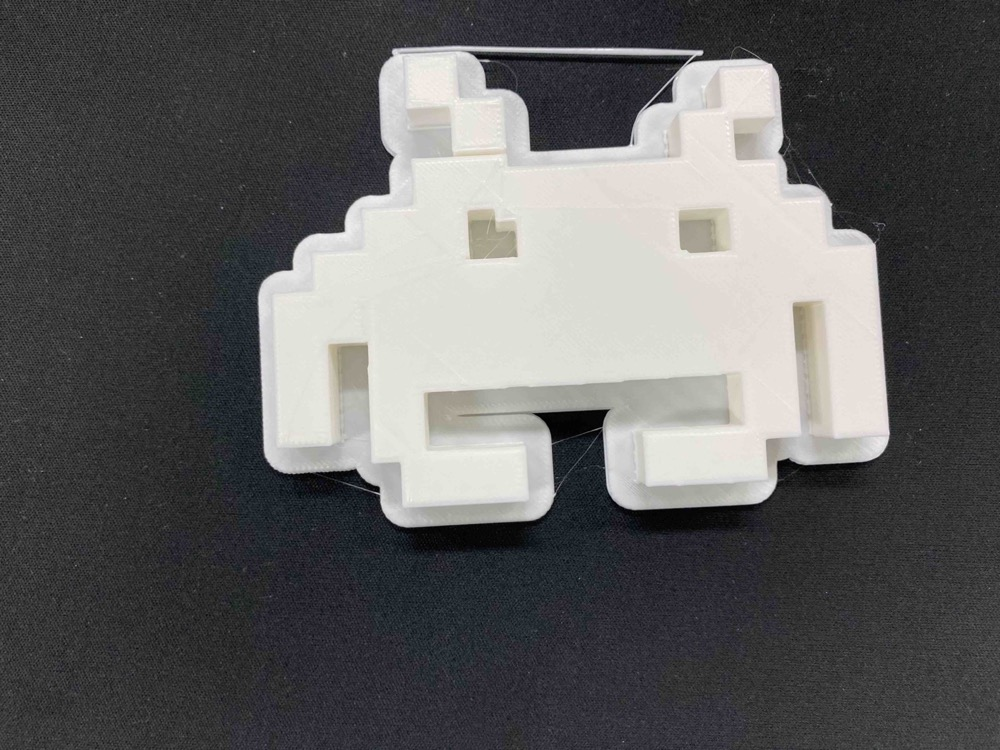
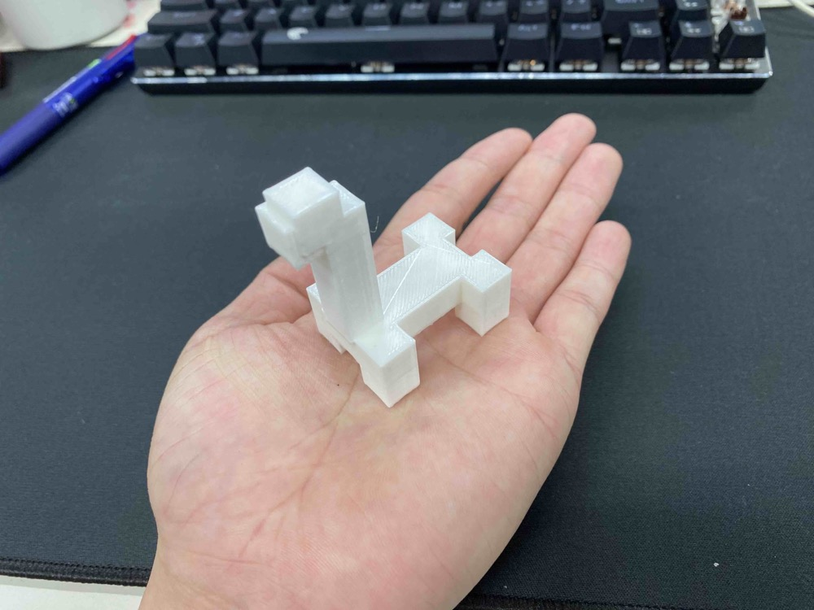
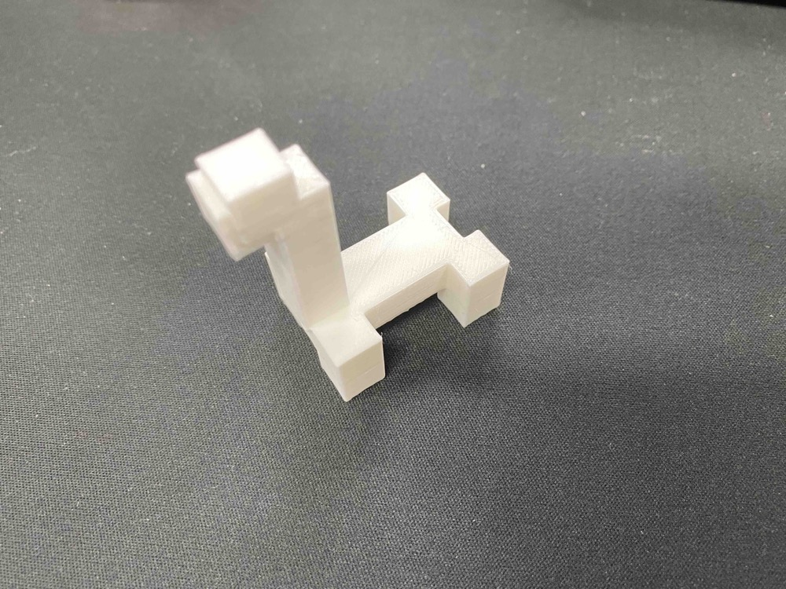

Korekurai Device

Open on YouTubeTechnology
- M5stickC Plus
- Processing
- 3D Printer
- Infrared Distance Sensor
- Gyro Sensor
Inspired by media theorist Marshall McLuhan's idea that number is an extension of touch and has bodily origins, Korekurai Device was created to recover the bodily nature of numbers that can be lost through standardized units.
In contemporary life, people have fewer opportunities to use body-based measures such as shaku, steps, or hand widths, while global standard units have become deeply embedded in everyday measurement.
This device treats the human gesture of saying “about this much” as input, enabling intuitive scale input based on each person's own bodily sense.
The device includes a distance sensor and an IMU to measure the distance and angle between fingers.
As an application example, I developed Korekurai Modeler, a 3D modeling application that uses these gestures. Users can model objects such as chairs, dinosaurs, and letters through the “about this much” gesture.
The project aims to reconnect bodily sensation with scale in digital space. It was conducted as my undergraduate graduation research.


